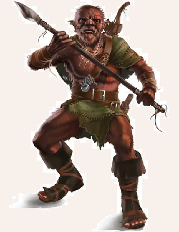

Goblins sind vielleicht das am meisten missverstandene Kulturvolk Aventuriens. Durchschnittlich sind sie etwas größer als Zwerge und von eher drahtiger als kräftiger Statur. Die mit den Orks verwandten Goblins sind am ganzen leicht gebeugten Körper von einem dichten struppigen Fell bedeckt, das meist von rostroter bis brauner Farbe ist. Entsprechend werden sie oftmals auch Rotpelze genannt. Zwar mangelt es ihnen an der schieren Körperkraft der Schwarzpelze, doch sind sie ausgesprochen geschickt und wendig. Aufgrund der niedrigen wulstigen Stirn, die - zusammen mit den vorspringenden Zähnen und der breiten Nase - den groben Gesichtern eine affenähnliche Anmutung verleiht, gehen die meisten Menschen davon aus, dass ihnen einfach kein großer Geist innewohnen kann. Dies kann sich jedoch schnell als schmerzhafte Fehleinschätzung entpuppen, denn die oft als Diebe und Feiglinge verrufenen Goblins gehören zu den ältesten Kulturen Aventuriens. So pflegen die zu mehreren Hunderttausenden über den ganzen Kontinent verteilten Rotpelze eine eigenständige Kultur, eine eigene Sprache und eine beachtliche animistische Tradition. Nur Goblinfrauen werden zu Zauberinnen ausgebildet und genießen hohes Ansehen in ihrem Volk. Eine magische Begabung bei männlichen Artgenossen, kommt nur äußerst selten überhaupt vor.
Verbreitung
Goblins kommen nur in Aventurien und gerüchteweise im Riesland vor.
Auf den anderen Kontinenten haben sie sich bisher nicht ausgebreitet.
Früher beherrschten sie große Reiche im Norden und waren sogar im Lieblichen Feld heimisch.
Heute siedeln sie vornehmlich in der Grünen Ebene, in den Sichelgebirgen, in Nostria und Andergast sowie im Bornland.
Als herumziehende Wegelagerer, als Arbeiter oder Sklaven kann man sie jedoch in fast jeder Ecke Aventuriens antreffen.
Goblins sind ausgesprochen anpassungsfähig und erindungsreich, sodass selbst an der unwirtlichen Eismeerküste Schneegoblins zu inden sind, denen im Winter weißes Fell wächst.
In den meisten Regionen Aventuriens gelten Goblins als rechtlos und werden Tieren gleichgestellt, deren Tötung bestenfalls als Wilderei strafbar ist.
Die großen Goblingemeinschaften in Festum und Uhdenberg beweisen indes, dass ein Zusammenleben mit Menschen und anderen Völker durchaus möglich ist.
Hier arbeiten sie oftmals als Rattenfänger, Gerber oder in anderen besonders schmutzigen oder gefährlichen Handwerken.
Während die Menschen um sie herum deswegen auf sie herabblicken, verstehen sie selbst solchen Einsatz als Zeichen ihres Mutes und ihrer Tapferkeit.
Lebensweise
Städtische Goblins passen sich in Lebensart und Glaubenswelt ihren menschlichen Nachbarn nach und nach an.
Menschen wie Stammesgoblins ist diese Entwicklung gleichermaßen suspekt, weshalb sie den städtischen Rotpelzen häuig mit Misstrauen und Verachtung begegnen.
Ihre Brüder und Schwestern in den Sichelgebirgen leben in Sippenverbänden, in denen Frauen aufgrund ihrer Bedeutung für den Nachwuchs eine herausragende Stellung einnehmen.
Im Zentrum ihrer Kultur steht die Verehrung des meist als aufrecht gehende Wildschweine dargestellten Götterpaares Mailam Rekdai und Orvai Kurim.
Mailam Rekdai, die Große Mutter oder Mutter Sau, ist Schöpferin der Suulak, wie sich die Goblins selbst nennen, und steht für Fruchtbarkeit, Heilkunst, Nahrung und Sommer.
Angeführt wird jede Sippe daher von einer weisen Frau, die oft, aber nicht zwingend, magiebegabt ist.
Das männliche Gegenstück zur großen Mutter, Orvai Kurim, ist der Herr der Jäger und steht für den kriegerischen Aspekt der Goblinkultur.
Jagd, Fehden und Krieg werden hierbei von den Goblins als grundsätzlich ähnliche Tätigkeiten verstanden.
Orvai Kurim wird üblicherweise nur von Goblinmännern verehrt.
Daher steht der Sippenführerin im Falle eines Konliktes der erfahrenste Jäger oder Krieger der Sippe mit Rat und Tat zur Seite.
Im Kriegsfall reiten Goblins bisweilen auf Wildschweinen in den Kampf, was für so manchen gestandenen Ritter ein lächerlicher Anblick sein mag.
Doch wer einmal von einem wütenden Eber über den Haufen gerannt wurde, dem mag das Lachen schnell vergehen.
Über die Geschichte der Rotpelze vor dem ersten Kontakt mit Menschen ist wenig bekannt, da Goblins keine Schriftsprache entwickelt haben.
Es wird jedoch vermutet, dass sie schon vor Jahrtausenden im aventurischen Norden große Reiche beherrscht haben.
Noch vor 800 Jahren existierte ein Großreich der Goblins im Bornland, das nur unter großen Verlusten durch die Theaterritter zerschlagen werden konnte.
Daher sollte man die Rotpelze niemals unterschätzen.
Denn auch wenn sie einzeln schwach und ängstlich wirken, sind sie nur selten allein.
In Jagdgruppen oder gar Heerzügen können sie ausgesprochen unangenehme Gegner darstellen.
Neben den Stammesgoblins inden sich fast überall im mittleren und nördlichen Aventurien Banden von Goblins.
Es handelt sich dabei meist um junge Männer, die in die Fremde gezogen sind, um durch Raub und Diebstahl zu Ruhm und Reichtum zu gelangen.
Sie schrecken vor nächtlichen Überfällen genauso wenig zurück wie vor Einbrüchen und anderen kriminellen Machenschaften, die schnelle Beute versprechen.
Goblinische Namen:
weiblich: Garrgh, Jääni, Kashka, Orvazz, Riiba, Rrhuusa, Rukuka, Seenä, Souli, Yaaschka
männlich: Bluugh, Grrargh, Groinkh, Gurluug, Joraak, Shraa, Sulrik, Traak, Urmeg, Xeetsch
Goblin
Größe: 1,40 bis 1,60 Schritt Körpergröße
Gewicht: 40 bis 60 Stein
Eigenschaften:
MU 10
KL 10
IN 13
CH 13
FF 14
GE 15
KO 12
KK 11
LeP: 24
AsP: -
KaP: -
INI: 13+1W6
SK: -1
ZK: 0
GS: 8
AW: 8
Waffenlos:
AT: 11
PA: 6
TP: 1W6+1
RW: kurz
Dolch:
AT: 12
PA: 8
TP: 1W6+2
RW: kurz
Säbel:
AT: 10
PA: 7
TP: 1W6+3
RW: mittel
Holzspeer:
AT: 10
PA: 7
TP: 1W6+2
RW: lang
Knüppel:
AT: 9
PA: 3
TP: 1W6+2
RW: mittel
Holzbogen:
FK: 9
LZ: 1
TP: 1W6+4
RW: 10/50/80
RS/BE: 0/0
Aktionen: 1
Vor- und Nachteile: Dunkelsicht I, Herausragender Sinn (Gehör), Kälteresistenz / Schlechte Eigenschaft (Aberglaube, Neugier)
Sonderfertigkeiten: Finte I
Talente: Klettern 5 (10/15/11), Körperbeherrschung 4 (15/15/12), Kraftakt 4 (12/11/11), Schwimmen 3 (15/12/11), Selbstbeherrschung 4 (10/10/12), Sinnesschärfe 7 (10/13/13), Verbergen 7 (10/13/15), Einschüchtern 4 (10/13/13), Menschenkenntnis 4 (10/13/13), Überreden 3 (10/13/13), Willenskraft 1 (10/13/13)
Anzahl: 1 oder 2W6+2 (Goblinbande) oder 3W20+20 (Goblinsippe)
Größenkategorie: mittel
Typus: Kulturschaffender, humanoid
Kampfverhalten: Abseits ihrer Heimat sind Goblins oft Wegelagerer und Räuber. Sie versuchen, Kämpfe zu vermeiden und ihr Gegenüber durch Drohungen einzuschüchtern. Müssen sie dennoch zu Gewalt greifen, bevorzugen sie Bögen oder Speere.
Flucht: individuell (meist nach Verlust von 50% der LeP oder Tod bzw. Flucht des Anführers)
Erfahren: IN 14 statt 13, GE 16 statt 15; LeP 26 statt 24; Waffenlos TP 1W6+2, Dolch TP 1W6+3, Säbel AT 11 / PA 8 / TP 1W6+4, Holzspeer AT 11 / PA 8 / TP 1W6+3, Knüppel AT 10 / PA 3; Klettern 7 statt 5, Körperbeherrschung 7 statt 4, Kraftakt 5 statt 4, Sinnesschärfe 9 statt 7, Verbergen 10 statt 7, Menschenkenntnis 6 statt 4, Willenskraft 3 statt 1
Kompetent: IN 14 statt 13, FF 15 statt 14, GE 16 statt 15, KK 12 statt 11; LeP 28 statt 24; Waffenlos TP 1W6+2, Dolch TP 1W6+3, Säbel AT 12 / PA 8 / TP 1W6+4, Holzspeer AT 13 / PA 9 / TP 1W6+3, Knüppel AT 11 / PA 4; Klettern 10 statt 5, Körperbeherrschung 10 statt 4, Kraftakt 6 statt 4, Sinnesschärfe 12 statt 7, Verbergen 12 statt 7, Menschenkenntnis 7 statt 4, Willenskraft 5 statt 1
| LeP-Verlust | Schmerz | |
|---|---|---|
| 18 LeP (¾) | +1 Schmerz | |
| 12 LeP (½) | +1 Schmerz | |
| 6 LeP (¼) | +1 Schmerz | |
| 5 LeP und weniger | +1 Schmerz |